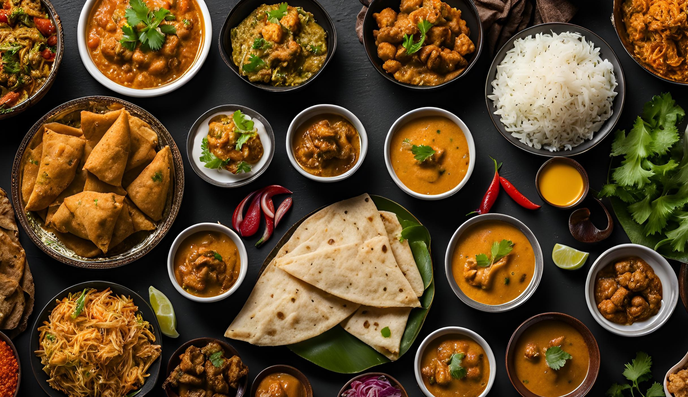

At Zauq Indian Cuisine, we believe that food is more than just sustenance—it is an emotion. The word Zauq means "taste, savor, and passion." We bring the diverse flavors of India to your table, from the fiery curries of the South to the creamy, aromatic dishes of the North. Using family recipes passed down through generations and spices freshly ground in-house, we create a symphony of flavors that dance on your palate. Whether you are a lover of spicy vindaloo or a fan of mild butter chicken, every dish is crafted with love, authenticity, and the finest ingredients.
Chef’s Note: “We cook for our family. You are our family.” – Chef Anil Sharma